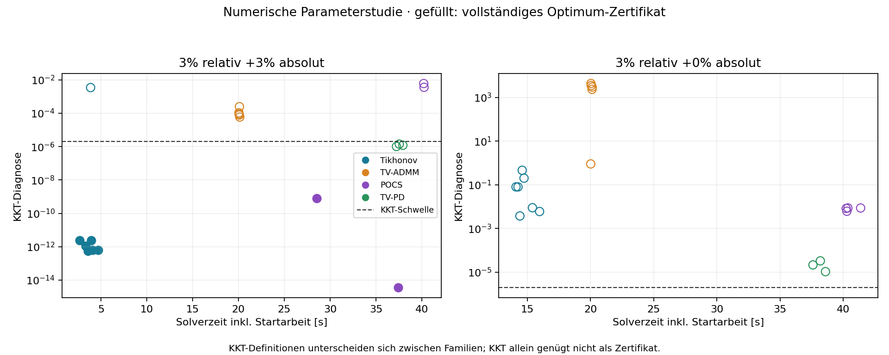
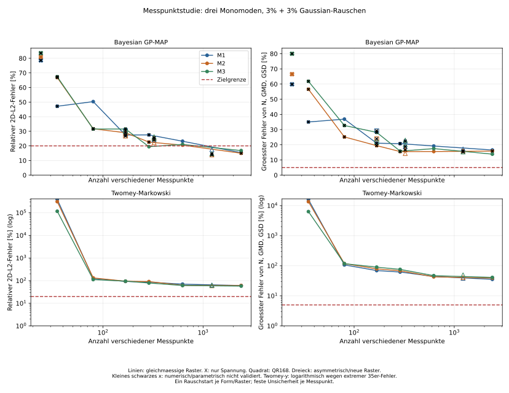

CDMA · ZWEIDIMENSIONALER BENCHMARK
Gespeicherte Solverfälle erkunden
Mobilitätsdurchmesser dm und Stokes-Durchmesser dst. Von der Sollverteilung zur rekonstruierten Lösung.
Neuer vollständiger Vergleich: Version 9 ersetzt die früheren großen Benchmark-Ergebnisse. Der aktuelle Status zeigt ausschließlich die gespeicherten Ergebnisse dieses Laufs. Numerische Validierung und Rekonstruktionsqualität werden getrennt geprüft; Lognormal-fit bleibt aus der Bewertung ausgeschlossen.
GESPEICHERTER EINZELFALL
Verteilung auswählen
Solver vergleichen
Der Lognormal-Fit läuft weiter, ist aber aus Standardauswahl, Bestenauswahl und zusammengefasster Bewertung ausgeschlossen. Er bleibt einzeln auswählbar. Auswahl gilt für Randverteilungen und Messraum. Jeder Solver wird mit denselben Messdaten verglichen. Gepunktete Kurven (*) sind nicht konvergiert.
2D-Verteilung im Vergleich
Soll, Rekonstruktion und vorzeichenbehafteter Fehler · d²N / dln(dm) dln(dst) [cm⁻³]
Sollverteilung
Rekonstruktion
Rekonstruktion − Soll
3D: zum Drehen ziehen, zum Zoomen scrollen. Gemeinsame Farb- und Höhenachse für Soll und Rekonstruktion. Nicht zulässige Bins bleiben leer. dᵥ-Ansichten transformieren dieselbe Lösung konservativ mit dem Jacobi-Faktor; sie sind keine unabhängigen Inversionen. Die Dichte bezieht sich auf die gewählten logarithmischen Achsen.
Randverteilung dm
Randverteilung dst
Messraum
Rauschfreie Erwartung, tatsächlich verwendete Messdaten und Rückprojektionen der ausgewählten Solver.
Ergebnisse dieses Datensatzes
Relatives L2 ist mit der zulässigen logarithmischen Binfläche gewichtet. ΔN ist vorzeichenbehaftet. χ² bezeichnet das mittlere quadrierte, mit σ gewichtete Residuum.
| Verfahren | Status | L2 | ΔN | Messraum-L2 | χ² | GMD m / st [nm] | GSD m / st | Zeit | Iterationen |
|---|
Vergleich eingrenzen
Rauschvollfaktorplan: 0, 3 und 5 % auf beiden Achsen. Eine feste Rauschrealisierung je Kombination. Form-Fit besitzt zusätzliche Modellannahmen; lsqlin prüft denselben Tikhonov-Ansatz.
Fehlerkarte: relatives × absolutes Rauschen
Median konvergierter Ergebnisse. Leere Zellen bedeuten: noch kein konvergiertes Ergebnis. Im Tooltip steht die Abdeckung.
Solververgleich
Median innerhalb der Auswahl, ausschließlich konvergierte Ergebnisse, ohne Lognormal-Fit. Tikhonov-lsqlin ist eine Optimiererkontrolle derselben Regularisierung und zählt nicht als eigene Solverfamilie. Unvollständige Abdeckung erlaubt noch keine allgemeine Rangfolge.
Abdeckung und Konvergenz
| Verfahren | Gespeichert / geplant | Konvergiert | Nicht konvergiert | Ausführungsfehler | Median |
|---|
Versuchsplan und Quellen
Drei repräsentative monomodale Verteilungen: dₘ/dₛₜ = 250/50, 315/60 und 400/75 nm. GSD = 1,30 auf beiden Achsen, ρ = 0, N = 10⁵ #/cm³. Jeweils 3 relative × 3 absolute Rauschstufen = 27 Datensätze. Dieser neue Lauf ersetzt die früheren großen Benchmark-Ergebnisse; die getrennten kleinen Solver- und Messpunktstudien bleiben erhalten.
Neuer Benchmark: 1.224 stationäre Messwerte = 24 × 48 positive Einstellungen + 24 Messungen ohne Rotation + 48 ohne Spannung. Zwei Rechenworker; speicherintensive Teilprobleme rechnen nacheinander. 64 Bins/Dekade. Die Messpunktstudie im eigenen Tab zeigt den früheren, getrennten Vergleich mit abgeschnittenem Rauschen.
Rauschmodell
y = μ + a max(μ) zₐ + r μ zᵣ, a,r ∈ {0; 0,03; 0,05}. Signierte Gauß-Abweichungen werden nicht bei null abgeschnitten; die rekonstruierte Verteilung bleibt nichtnegativ. Absolute und relative Zufallsvektoren sind unabhängig und je Form über die Fehlerstufen gepaart. Das absolute σ bezieht sich auf den rauschfreien Peak des 1.224-Punkte-Rasters. Kein gemeinsamer Offset und kein Poisson-Modell. Die Messgewichte verwenden weiterhin einen beobachteten Signalproxy; χ²-Kalibrierung ist deshalb näherungsweise.
σ zur Gewichtung = √((a max(μ))²+(r y)²); der absolute Kalibrierwert ist bekannt, die relative Gewichtung nutzt Messwerte. Für 0/0 gelten deklarierte numerische Toleranzen. Die Gauß- und χ²-Kalibrierung ist mit diesen Signalproxies näherungsweise. Eine Realisierung liefert keine statistisch abgesicherte Rangfolge.
Nebenbedingungen
Nichtnegativität und dₛₜ ≤ dₘ gelten in allen Armen. Die Gesamtzahl wird rekonstruiert, ohne Festlegung auf die bekannte Sollzahl. POCS-PSS verwendet die erklärte gewichtete Messfehlerkugel. POCS-CDMA verwendet Messbänder und dieselbe Minimum-Norm-Zielfunktion wie in den geprüften Solver-Kontrollen. Sollwerte liefern keine zusätzlichen Randbedingungen.
Optionale unabhängig gemessene Gesamtzahl und Randverteilungen sind als lineare Toleranzbänder für POCS-PSS, TGV² und lsqlin vorbereitet und separat getestet. Im Hauptvergleich sind sie deaktiviert, da entsprechende unabhängige Eingangsdaten fehlen. Andere Arme werden bei aktivierten Zusatzbedingungen ausdrücklich abgewiesen.
Koordinaten und Diskretisierung
Spalten = dₘ, Zeilen = dₛₜ. 108 × 108 Bins über 20,535–1000 nm ergeben exakt 64 Bins pro Dekade je Achse. Diagonale Zellen sind Dreiecke. Unbekannte sind Bin-Anzahlkonzentrationen, geplottet wird die Dichte pro logarithmischer Fläche.
dᵥ = (dₛₜ² dₘ)^(1/3). Die Umrechnung benötigt beide Eigenschaften. dₛₜ ≤ dᵥ ≤ dₘ ist damit erfüllt. Transformierte Zellen behalten ihre Konzentration, die Dichte erhält für (dₘ,dᵥ) den Faktor 1,5 und für (dᵥ,dₛₜ) den Faktor 3. Ein bloßes Umbenennen der Koordinaten verbessert die Inversion nicht. Ein unabhängiger Vergleich neu diskretisierter dᵥ-Gitter ist noch nicht durchgeführt.
Die 27 Hauptfälle verwenden identische Vorwärts- und Inversionsgitter und sind idealisierte Konsistenztests. Der vorhandene feinere Vorwärtsinput bleibt für separate Diskretisierungskontrollen erhalten; er ist kein zusätzlicher Messwert und keine Randbedingung der Rekonstruktion.
Verfahren und Auswertung
Die acht bestehenden Verfahren bleiben erhalten. Ergänzt: TGV² mit Primal-Dual-Optimierung, ein separater monomodaler Lognormal-Fit und lsqlin bei exakt demselben Tikhonov-Parameter. TGV² ist eine neue Regularisierung; lsqlin ist ein Optimierer; der Lognormal-Fit ist ein parametrischer Modellansatz. Parameterauswahl nutzt Messdaten, keine Sollfehler.
Das relative L2 integriert quadratische Dichtefehler mit den zulässigen Binflächen. GMD/GSD berücksichtigen logarithmische Binnenmomente. Nicht konvergierte Ergebnisse werden separat ausgewiesen. „Bestes Ergebnis“ wählt ausschließlich zur Illustration nach Soll-L2 unter konvergierten Ergebnissen; der starke Form-Fit bleibt im Namen erkennbar.
Originalquellen
Rüther et al. (2025), POCS-CDMA · Bredies, Kunisch & Pock (2010), TGV · Chambolle & Pock, Primal-Dual · MATLAB lsqlin.
Downloads und Aktualisierung
Gespeicherte Ergebnisse (CSV) · MATLAB-Quellpaket · Prüfbericht und Ausführungsstand · GitHub-Repository
Diese Seite zeigt einen datierten Export.
Aktueller Vergleich: Version 9 mit geprüften numerischen Einstellungen
Geplant sind 27 Datensätze × 11 Verfahren = 297 Solverläufe mit zwei MATLAB-Rechenworkern. Die neue Zusammenstellung hat die MATLAB-Vorprüfung bestanden (2026-10-06, 11:43 MESZ). Der vollständige Lauf wird frisch berechnet; der Status oben zeigt die tatsächlich gespeicherten Ergebnisse.
Dieser Lauf ersetzt die früheren großen Benchmark-Ergebnisse in der aktiven Auswertung. Die gewünschte Löschung der alten großen Ausgabeverzeichnisse wurde von der automatischen Aktionsprüfung blockiert; diese Dateien bleiben als inaktiver Altstand erhalten. Die getrennten kleinen v7-/v8-Solverstudien und die Messpunktstudie bleiben historische Kontrollen.
Welche Einstellungen werden übernommen?
| Arm | Numerische Einstellung und Nachweis |
|---|---|
| Tikhonov | Skalierter adaptiver Löser mit Anfangswert β = 0,001. Die erklärte Zielfunktion und datenbasierte Parameterwahl bleiben erhalten; der strenge Optimalitäts- und Dualitätsnachweis wird auf der zurückgegebenen Lösung geprüft. |
| Tikhonov-lsqlin | Optimiererkontrolle mit demselben ausgewählten Tikhonov-Parameter und denselben Messdaten; zählt als eigener Rechenlauf, aber als dieselbe Regularisierungsfamilie. |
| POCS-CDMA | Dualer Minimum-Norm-Löser für dieselben Messbänder und die physikalische Positivität: 100 Startschritte, 100 PCG-Schritte je Teilproblem, höchstens 400 Newton-Schritte und 180 s Budget. L-BFGS und anschließende Polierung sind deaktiviert. Messbandverträglichkeit und Optimalität bleiben getrennte Nachweise. |
| TV-2D | Überrelaxiertes ADMM mit Faktor 1,8. Die strengen Optimalitäts-, Residuen- und Komplementaritätsprüfungen bleiben aktiv. Diese numerische Einstellung ist experimentell; ein erreichtes Iterationslimit erhält keine automatische Konvergenzbestätigung. TGV2-ADMM behält Faktor 1,6. |
| Übrige Arme | POCS-PSS, Twomey-Markowski, Maximum Entropy, Bayesian GP-MAP und Huber-TV behalten ihre erklärten Verfahren. Lognormal-fit bleibt ein zusätzlicher Vergleich mit starker monomodaler Formannahme. |
Die Einstellungen stammen aus begrenzten Solver- und Parameterkontrollen. Sie begründen den nächsten vollständigen Vergleich; ihre Überlegenheit für sämtliche Rauschstufen und ihre Rekonstruktionsgenauigkeit sind erst anhand der neuen Ergebnisse zu beurteilen.
Messraster, Rauschen und Randbedingungen
1.224 stationäre Messwerte: 24 × 48 positive Spannung-Drehzahl-Kombinationen plus 24 Einstellungen ohne Rotation und 48 ohne Spannung. Das Rekonstruktionsgitter hat 108 × 108 Zellen mit 64 Bins/Dekade und 5.886 zulässigen Binmassen. Drei monomodale Formen werden bei jeweils 0, 3 und 5 % relativem und absolutem Gaußrauschen verglichen. Das absolute σ bezieht sich auf den rauschfreien Signalpeak.
Gauß-Abweichungen bleiben signiert; die rekonstruierte Verteilung ist nichtnegativ und erfüllt dₛₜ ≤ dₘ. Alle Arme erhalten dieselben gespeicherten Messwerte und Gewichte. Die Gewichte verwenden einen beobachteten Signalproxy, wodurch die χ²-Kalibrierung näherungsweise bleibt. Unabhängige Gesamtzahl- und Randverteilungsmessungen sind im Hauptlauf nicht vorhanden; die Sollverteilung dient ausschließlich der nachträglichen Qualitätsbewertung. Der vorhandene feinere Vorwärtsinput bleibt für separate Kontrollen erhalten.
Vorprüfung und Bewertung
Vorprüfung bestanden: Unabhängige kleine Referenzlösungen, Nebenbedingungen, signiertes Rauschen, zentrale Solverzuordnung, strenge Tikhonov-/lsqlin-Nachweise, TV/TGV und 15 Einstellungen mit feinerem Vorwärtsraster wurden tatsächlich in MATLAB R2021a geprüft. Frühere bestandene Kontrollen werden als historische Evidenz geführt. Numerische Konvergenz, Messdatenverträglichkeit, Parameterwahl und Nebenbedingungen werden getrennt gespeichert. Der Lognormal-Fit läuft mit und bleibt aus Bestenauswahl und zusammengefasster Bewertung ausgeschlossen.
Alle Qualitätsziele müssen gemeinsam erfüllt sein: Konzentration sowie GMD und GSD beider Achsen jeweils höchstens 5 % relativer Fehler, zweidimensionaler Verteilungs-L2 höchstens 20 %. Erfolgreiche numerische Validierung garantiert diese Qualitätsziele nicht. Eine Rauschrealisierung je Form erlaubt keine statistisch abgesicherte allgemeine Rangfolge.
Laufzeit und gespeicherte Zwischenstände
Die vorläufige Gesamtlaufzeit wird anhand des bisherigen v6-Verlaufs auf etwa 25–35 Stunden geschätzt. Parametersuchen, Rauschstufen und einzelne schwierige Teilprobleme können die Dauer verändern. Ergebnisse werden nach jedem Solver lokal gespeichert. Der laufende Benchmark aktualisiert seinen lokalen Webexport selbst; die frühere Automation bleibt gelöscht. Das MATLAB-Fertigfenster bleibt eingeschaltet.
Aktueller Laufbericht · Einstellungen und offene Prüfungen · Diagnosen des ausgewählten Laufs · Aktive MATLAB-Quellen
Historische Solverstudie v7 vor dem neuen Lauf
Neue Solvervarianten: getrennte v7-Prüfung
Fünf zusätzliche Solverarme in eigener Revision v7. Tikhonov-Scaled, Tikhonov-LSQR-StrongPrecond, POCS-CDMA-Dual und TV-PD optimieren dieselben bisherigen Zielfunktionen. TV-Morozov-PD minimiert TV unter einer direkten gewichteten Messfehlergrenze und ist eine eigene Formulierung. Verbesserungen sind experimentell und werden nicht vorab als Erfolg gewertet. Der Hauptbenchmark v6 bleibt pausiert bei 83/297.
Export 2026-10-06T07:50:59+02:00. Kleine unabhängige Referenztests: pocs: bestanden; smooth: bestanden; strong: bestanden; tv: bestanden; dispatch: bestanden.
Gleiche gespeicherte Messwerte, Messgewichte, 1.224 Messungen und 64 Bins/Dekade. Tikhonov/TV-Vergleiche verwenden den zuvor allein aus Messdaten gewählten Parameter und starten bei null. Eine vorher ungültige Parameterwahl bleibt ungültig. Begrenzte Iterations- und Zeitbudgets; ausbleibende Zertifikate bleiben offen. Die alten Laufzeiten enthalten eine Parametersuche, die festen v7-Kontrollen nicht. Daraus darf kein Geschwindigkeitsfaktor abgeleitet werden.
| Fall | Rauschen | Variante | Zeit | Optimum | Daten | Parameter | 2D-Fehler | bisheriger 2D-Fehler | alle Ziele |
|---|---|---|---|---|---|---|---|---|---|
| ds00002 | 3 % relativ + 0 % absolut | POCS-CDMA-Dual | 72.7 s | offen | nein | ✓ | 48.66 % | — | nein |
| ds00002 | 3 % relativ + 0 % absolut | Tikhonov-LSQR-StrongPrecond | 16.9 s | offen | ✓ | offen | 10.29 % | 11.16 % | nein |
| ds00002 | 3 % relativ + 0 % absolut | Tikhonov-Scaled | 14.8 s | offen | ✓ | offen | 11.18 % | 11.16 % | nein |
| ds00002 | 3 % relativ + 0 % absolut | TV-Morozov-PD | 29.5 s | offen | nein | ✓ | 26.75 % | — | nein |
| ds00002 | 3 % relativ + 0 % absolut | TV-PD | 28 s | offen | nein | offen | 255.81 % | 73.04 % | nein |
| ds00005 | 3 % relativ + 3 % absolut | POCS-CDMA-Dual | 32.5 s | ✓ | ✓ | ✓ | 69.57 % | 69.56 % | nein |
| ds00005 | 3 % relativ + 3 % absolut | Tikhonov-LSQR-StrongPrecond | 3.98 s | ✓ | ✓ | ✓ | 18.72 % | 18.72 % | nein |
| ds00005 | 3 % relativ + 3 % absolut | Tikhonov-Scaled | 3.29 s | ✓ | ✓ | ✓ | 18.72 % | 18.72 % | nein |
| ds00005 | 3 % relativ + 3 % absolut | TV-Morozov-PD | 28.5 s | offen | nein | ✓ | 50.23 % | — | nein |
| ds00005 | 3 % relativ + 3 % absolut | TV-PD | 28.5 s | offen | ✓ | offen | 24.39 % | 24.39 % | nein |
Längere TV-Kontrollen, getrennt vom Startvergleich
Je höchstens 25.000 Iterationen oder 120 s. Morozov verwendet hier eine gespeicherte Tikhonov-Lösung als Startwert aus Messdaten; die Laufzeit enthält deren frühere Berechnung nicht. Der vollständige Primal-Dual-Zustand ist gespeichert.
- ds00005_TV_Morozov_PD: Optimum offen, 120 s, Gap —, KKT 0.00107, χ² 1.12, 2D-Fehler 37.65 %.
- ds00005_TV_PD: Optimum bestätigt, 100 s, Gap 9.31e-07, KKT 1.78e-07, χ² 0.973, 2D-Fehler 24.39 %.
Ein gültiges Optimierergebnis ersetzt keine abgesicherte Regularisierungsparameterwahl. Die feste TV-Parameterkontrolle bleibt deshalb aus einer wissenschaftlichen Bestenauswahl ausgeschlossen.
Längere Tikhonov-Kontrolle bei rein relativem Rauschen
40 äußere Schritte, höchstens 1.200 LSQR-Schritte je Schritt, höchstens 120 s, Start mit der gespeicherten kurzen Kontrolle. Ergebnis: Optimum offen, KKT 0.0015, 2D-Fehler 11.00 %, 96.7 s zusätzlich zu 16.9 s für den Startwert. Die Parameterwahl des Ausgangslaufs bleibt unbestätigt.
2D-Fehler: flächengewichteter relativer L2-Fehler der differentiellen Verteilung. Alle Ziele: zusätzlich Konzentration, beide GMD und beide GSD jeweils ≤5 %, 2D-Fehler ≤20 %, mit gültigen numerischen Zertifikaten. Keine Bestenauswahl aus nicht konvergierten Ergebnissen. Lognormal-fit bleibt ausgeschlossen. POCS-CDMA verwendet simultane Punktbänder. Tikhonov und TV-PD verwenden gewichtete Least-Squares-Ziele mit Discrepancy-Parameterwahl und Datenprüfung. Nur TV-Morozov hat eine direkte Fehlerball-Nebenbedingung.
Eigener Punkt: Nebenbedingungen im POCS-Dual-Solver
Nichtnegativität und dₛₜ ≤ dₘ sind Teil des zulässigen Problems. Alle Messbänder werden simultan geprüft. Unabhängig gemessene Gesamtzahl und Randverteilungen können zusätzliche Bänder bilden; sie sind mangels solcher Messdaten in den realen Kontrollen deaktiviert. Die Sollverteilung liefert keine Nebenbedingungen. Unter dem dokumentierten Umrechnungsmodell folgt dₛₜ ≤ dᵥ ≤ dₘ. Nicht jede denkbare Partikelform ist dadurch beschrieben.
v7-Prüfbericht · Kontrollen (CSV) · Referenztests · v7-Quellen
Grundlagen: LSQR und Vorkonditionierung, Dykstra, ADMM und Dual-Koordinatenverfahren, Primal-Dual mit Liniensuche, TV mit expliziter Messfehlergrenze.
Historische Parameterstudie v8 vor dem neuen Lauf
Solver-Einstellungen: begrenzte Parameterstudie v8
38 von 38 Kontrollen gespeichert. Zwei vorhandene Rauschfälle; gleiche Zielfunktion und für alle Varianten dieselben strengen Kriterien. Hauptbenchmark weiterhin pausiert bei 83/297.
Untersucht: Tikhonov-Vorkonditionierung und innere Genauigkeit, ADMM-Überrelaxation und Residuenbalance, POCS-Warmup/PCG sowie vollständige TV-Warmstarts. Startarbeit ist in der Solverzeit enthalten. Gemeinsame Vorbereitung wird zusätzlich ausgewiesen. Im Startvergleich je Einstellung ein Zeitversuch; zusätzliche Tikhonov-Wiederholungen stehen unten.
Optimum zertifiziert: 8; vollständig validiert: 8; alle Genauigkeitsziele und Validierung erfüllt: 0.
Kleinerer 2D-Fehler einer nicht konvergierten Lösung gilt nicht als Solververbesserung. Die datenbasierte α-Auswahl bleibt unverändert; bisher unbestätigte Parameter werden durch diesen Optimiertest nicht bestätigt. Lognormal-fit bleibt aus dieser Bewertung ausgeschlossen.
Tikhonov wird zusätzlich über eine unabhängige Dual-Untergrenze geprüft. Ein Referenztest hatte gezeigt, dass das normalisierte KKT-Kriterium allein nach einem α-Wechsel zu früh erfüllt sein kann. Die zusätzliche Prüfzeit wird mitgezählt.
Bewertung: Adaptive Tikhonov-Genauigkeit spart im gemischten Fall Rechenzeit bei gleicher zertifizierter Verteilung. POCS100/100 bleibt hier günstiger als100/350; sein Formfehler bleibt hoch. TV1,8 ist ein Kandidat für weitere Konvergenzprüfungen. Kein getesteter Satz erfüllt alle wissenschaftlichen Zielgrenzen.

Bericht · Alle Parameter und Metriken (CSV) · MATLAB-Studie und Herkunft
Zusätzliche Zeitwiederholungen: Tikhonov beim gemischten Rauschfall
Drei Wiederholungen je Einstellung bei rotierter Reihenfolge. Gleiche feste α und Sollverteilung nur zur anschließenden Fehlerprüfung. Median und Spannweite der Solverzeit einschließlich Zertifikatsprüfung; gemeinsame Vorbereitung separat.
| Einstellung | Median | Spannweite | Validiert |
|---|---|---|---|
| beta_5e-2_fixed | 3.33s | 3.27–3.38s | 3/3 |
| beta_1e-3_fixed | 3.95s | 3.91–3.96s | 3/3 |
| beta_1e-3_adaptive | 2.67s | 2.66–2.73s | 3/3 |
Alle getesteten Einstellungen und Diagnosen
| Fall | Solver | Einstellung | Solver s | Setup s | Optimum | Daten | α gültig | 2D-Fehler | Alle Ziele |
|---|---|---|---|---|---|---|---|---|---|
| ds00002 | Tikhonov | beta_1e-2_fixed | 14.6 | 1.25 | nein | nein | nein | 11.18% | nein |
| ds00002 | Tikhonov | beta_1e-3_adaptive | 14.1 | 1.25 | nein | ja | nein | 11.22% | nein |
| ds00002 | Tikhonov | beta_1e-3_continuation | 14.7 | 1.25 | nein | ja | nein | 11.07% | nein |
| ds00002 | Tikhonov | beta_1e-3_fixed | 14.3 | 1.25 | nein | ja | nein | 11.22% | nein |
| ds00002 | Tikhonov | beta_1e-4_fixed | 14.4 | 1.25 | nein | ja | nein | 11.07% | nein |
| ds00002 | Tikhonov | beta_1e-6_fixed | 16 | 1.25 | nein | ja | nein | 10.29% | nein |
| ds00002 | Tikhonov | beta_5e-2_fixed | 15.4 | 1.25 | nein | ja | nein | 11.18% | nein |
| ds00002 | TV-ADMM | relax_1.2_balance_10 | 20.1 | 2.44 | nein | nein | nein | 17.34% | nein |
| ds00002 | TV-ADMM | relax_1.6_balance_10 | 20 | 2.44 | nein | nein | nein | 18.77% | nein |
| ds00002 | TV-ADMM | relax_1.6_balance_20 | 20.1 | 2.44 | nein | nein | nein | 18.77% | nein |
| ds00002 | TV-ADMM | relax_1.6_balance_5 | 20.1 | 2.44 | nein | nein | nein | 18.77% | nein |
| ds00002 | TV-ADMM | relax_1.8_balance_10 | 20 | 2.44 | nein | nein | nein | 19.44% | nein |
| ds00002 | POCS | warm0_pcg100 | 40.2 | 1.24 | nein | nein | ja | 51.02% | nein |
| ds00002 | POCS | warm100_pcg100 | 40.4 | 1.24 | nein | nein | ja | 48.68% | nein |
| ds00002 | POCS | warm100_pcg350 | 41.4 | 1.24 | nein | nein | ja | 48.68% | nein |
| ds00002 | POCS | warm400_pcg100 | 40.3 | 1.24 | nein | nein | ja | 45.05% | nein |
| ds00002 | TV-PD | cold | 37.6 | 1.29 | nein | ja | nein | 262.57% | nein |
| ds00002 | TV-PD | primal_dual | 38.6 | 1.29 | nein | ja | nein | 262.38% | nein |
| ds00002 | TV-PD | primal_only | 38.2 | 1.29 | nein | ja | nein | 261.51% | nein |
| ds00005 | Tikhonov | beta_1e-2_fixed | 3.56 | 1.41 | ja | ja | ja | 18.72% | nein |
| ds00005 | Tikhonov | beta_1e-3_adaptive | 2.65 | 1.41 | ja | ja | ja | 18.72% | nein |
| ds00005 | Tikhonov | beta_1e-3_continuation | 3.87 | 1.41 | nein | ja | ja | 18.72% | nein |
| ds00005 | Tikhonov | beta_1e-3_fixed | 3.92 | 1.41 | ja | ja | ja | 18.72% | nein |
| ds00005 | Tikhonov | beta_1e-4_fixed | 4.08 | 1.41 | ja | ja | ja | 18.72% | nein |
| ds00005 | Tikhonov | beta_1e-6_fixed | 4.71 | 1.41 | ja | ja | ja | 18.72% | nein |
| ds00005 | Tikhonov | beta_5e-2_fixed | 3.33 | 1.41 | ja | ja | ja | 18.72% | nein |
| ds00005 | TV-ADMM | relax_1.2_balance_10 | 20.1 | 2.42 | nein | ja | nein | 24.23% | nein |
| ds00005 | TV-ADMM | relax_1.6_balance_10 | 20.1 | 2.42 | nein | ja | nein | 24.28% | nein |
| ds00005 | TV-ADMM | relax_1.6_balance_20 | 20.1 | 2.42 | nein | ja | nein | 24.24% | nein |
| ds00005 | TV-ADMM | relax_1.6_balance_5 | 20.1 | 2.42 | nein | ja | nein | 24.15% | nein |
| ds00005 | TV-ADMM | relax_1.8_balance_10 | 20.1 | 2.42 | nein | ja | nein | 24.32% | nein |
| ds00005 | POCS | warm0_pcg100 | 40.2 | 1.25 | nein | nein | ja | 68.61% | nein |
| ds00005 | POCS | warm100_pcg100 | 28.6 | 1.25 | ja | ja | ja | 69.57% | nein |
| ds00005 | POCS | warm100_pcg350 | 37.4 | 1.25 | ja | ja | ja | 69.57% | nein |
| ds00005 | POCS | warm400_pcg100 | 40.2 | 1.25 | nein | nein | ja | 70.80% | nein |
| ds00005 | TV-PD | cold | 37.5 | 1.26 | nein | ja | nein | 24.39% | nein |
| ds00005 | TV-PD | primal_dual | 37.9 | 1.26 | nein | ja | nein | 24.39% | nein |
| ds00005 | TV-PD | primal_only | 37.2 | 1.26 | nein | ja | nein | 24.39% | nein |
Einfluss der Messpunktzahl
Wir prüfen, wie zusätzliche Messpunkte die Rückrechnung verbessern. Verglichen werden stationäre Messraster bei unveränderter Anzahlkonzentration, Verteilungsbreite, Rauschstufe und Inversionsauflösung. Eine ausreichende Punktzahl ist erst belegt, wenn alle vorab festgelegten Qualitätsziele gemeinsam erfüllt sind. Der Lognormal-Fit bleibt aus dieser Beurteilung ausgeschlossen.
Die separate Reihe variiert den Referenzumfang von 624 auf 1.224 und 2.400 Einstellungen. Das sind 24×24, 24×48 und 48×48 positive U-/Ω-Stufen mit ergänzenden Nullstufen. Der unterschiedliche Aufbau der 1.224er-Stufe wird ausdrücklich gezeigt: eine höhere Punktzahl allein beschreibt den Messplan nicht vollständig.
Vorab festgelegte Qualitätsziele
Gesamtkonzentration N, GMDₘ, GMDₛₜ, GSDₘ und GSDₛₜ müssen jeweils höchstens 5 % relativen Fehler erreichen. Der flächengewichtete relative 2D-L2-Fehler muss höchstens 20 % betragen. Alle Ziele gelten gemeinsam. Numerische Konvergenz, Messdatenverträglichkeit und abgesicherte Parameterwahl bleiben zusätzliche Voraussetzungen.
27 synthetische Datensätze sind 27 getrennte Rückrechnungen. Sie bilden keine Trainingsdatenbank und liefern nicht gemeinsam 27-mal mehr Information über eine einzelne unbekannte Verteilung.
Direkter Vergleich: 624 → 1.224 → 2.400 Punkte
Drei aktuelle Monomoden, N = 10⁵ #/cm³, GSDₘ = GSDₛₜ = 1,30, 3 % relatives und 3 % absolutes Rausch-σ. Der absolute Referenzpegel bleibt gleich. Teilraster übernehmen exakt gespeicherte Messwerte und Unsicherheiten; neu erzeugte dichte Raster verwenden eigene dokumentierte Rauschziehungen. Das Inversionsgitter bleibt bei 64 Bins je Dekade.
| Verfahren | Positive U × Ω | Messpunkte | Monomoden | 2D-L2-Fehler | Größter Momentfehler | Validiert | Alle Ziele erfüllt | Stand |
|---|---|---|---|---|---|---|---|---|
| Bayesian GP-MAP | 24 × 24 | 624 | 3 / 3 | 20,52 %–23,19 % | 15,53 %–19,16 % | 3 | 0 | Dreiergruppe gespeichert |
| Bayesian GP-MAP | 24 × 48 | 1.224 | 3 / 3 | 13,83 %–17,40 % | 15,26 %–17,21 % | 1 | 0 | Dreiergruppe gespeichert |
| Bayesian GP-MAP | 48 × 48 | 2.400 | 3 / 3 | 14,96 %–16,78 % | 13,81 %–16,54 % | 2 | 0 | Dreiergruppe gespeichert |
| Twomey-Markowski | 24 × 24 | 624 | 3 / 3 | 61,16 %–70,16 % | 42,92 %–46,93 % | 3 | 0 | Dreiergruppe gespeichert |
| Twomey-Markowski | 24 × 48 | 1.224 | 3 / 3 | 59,60 %–64,43 % | 38,31 %–49,73 % | 3 | 0 | Dreiergruppe gespeichert |
| Twomey-Markowski | 48 × 48 | 2.400 | 3 / 3 | 57,67 %–61,03 % | 35,43 %–40,97 % | 3 | 0 | Dreiergruppe gespeichert |
Der eingefrorene GP-MAP-Ansatz und Twomey werden bei denselben 3 % + 3 %-Messdatensätzen je Raster verglichen. Zahlenbereiche gelten nur für tatsächlich gespeicherte Fälle. Alle drei Monomoden müssen jeweils sämtliche Ziele erfüllen. Die Anzahl Messpunkte und das unveränderte Rekonstruktionsgitter sind getrennte Größen.
Einzelfallfehler an den Zielgrenzen
Absolute relative Fehler, nachträglich gegen die Sollverteilung berechnet. Farbmarkierungen bewerten nur das jeweilige Einzelziel. Gemeinsamer Erfolg setzt alle Ziele und die numerische Validierung voraus.
| Verfahren | Punkte | Monomode | 2D-L2 | N | GMDm | GMDst | GSDm | GSDst | Validiert | Gemeinsam erfüllt |
|---|---|---|---|---|---|---|---|---|---|---|
| Bayesian GP-MAP | 624 | M1 | 23,19 % | 4,43 % | 3,40 % | 0,13 % | 19,16 % | 14,69 % | ja | nein |
| Bayesian GP-MAP | 624 | M2 | 20,52 % | 3,49 % | 1,53 % | 3,24 % | 15,53 % | 14,73 % | ja | nein |
| Bayesian GP-MAP | 624 | M3 | 21,03 % | 5,59 % | 5,41 % | 3,41 % | 17,45 % | 15,08 % | ja | nein |
| Bayesian GP-MAP | 1224 | M1 | 17,40 % | 2,31 % | 1,11 % | 3,85 % | 14,60 % | 17,21 % | ja | nein |
| Bayesian GP-MAP | 1224 | M2 | 13,83 % | 1,91 % | 1,32 % | 5,49 % | 9,99 % | 16,03 % | offen | nein |
| Bayesian GP-MAP | 1224 | M3 | 14,63 % | 2,52 % | 2,14 % | 0,44 % | 15,26 % | 12,73 % | offen | nein |
| Bayesian GP-MAP | 2400 | M1 | 15,35 % | 2,74 % | 1,56 % | 3,39 % | 14,81 % | 16,54 % | ja | nein |
| Bayesian GP-MAP | 2400 | M2 | 14,96 % | 2,06 % | 0,55 % | 3,29 % | 15,11 % | 15,82 % | offen | nein |
| Bayesian GP-MAP | 2400 | M3 | 16,78 % | 3,00 % | 1,62 % | 1,47 % | 13,81 % | 13,81 % | ja | nein |
| Twomey-Markowski | 624 | M1 | 70,16 % | 20,14 % | 13,73 % | 14,79 % | 43,96 % | 15,68 % | ja | nein |
| Twomey-Markowski | 624 | M2 | 62,05 % | 15,17 % | 10,95 % | 10,01 % | 42,92 % | 21,54 % | ja | nein |
| Twomey-Markowski | 624 | M3 | 61,16 % | 17,68 % | 15,05 % | 16,97 % | 46,93 % | 23,89 % | ja | nein |
| Twomey-Markowski | 1224 | M1 | 64,43 % | 15,74 % | 9,80 % | 11,43 % | 38,31 % | 18,23 % | ja | nein |
| Twomey-Markowski | 1224 | M2 | 59,60 % | 14,85 % | 9,72 % | 9,95 % | 40,49 % | 21,15 % | ja | nein |
| Twomey-Markowski | 1224 | M3 | 61,51 % | 15,55 % | 13,80 % | 15,71 % | 49,73 % | 23,96 % | ja | nein |
| Twomey-Markowski | 2400 | M1 | 61,03 % | 13,90 % | 8,23 % | 10,58 % | 35,43 % | 15,74 % | ja | nein |
| Twomey-Markowski | 2400 | M2 | 60,85 % | 13,00 % | 8,09 % | 10,57 % | 38,83 % | 18,84 % | ja | nein |
| Twomey-Markowski | 2400 | M3 | 57,67 % | 12,46 % | 9,06 % | 11,77 % | 40,97 % | 21,64 % | ja | nein |



Gespeicherte Rekonstruktionsprüfungen nach Messplan
Gespeicherter Stand der separaten Messpunktstudie. 57 von 57 vorgesehenen Kontrollen; 21 gespeicherte Twomey-Kontrollen. Alle vorgesehenen Kontrollen sind gespeichert. Die gemeinsamen Qualitätsziele werden separat geprüft. Stand: 2026-10-05 22:01:10.
| Messplan | Verfahren | Rel. + abs. σ | Punkte | Monomoden | 2D-L2-Fehler | Größter Momentfehler | Validiert | Alle Ziele erfüllt |
|---|---|---|---|---|---|---|---|---|
| 24 × 24 | Bayesian GP-MAP | 3,00 % + 3,00 % | 624 | 3 / 3 | 20,52 %–23,19 % | 15,53 %–19,16 % | 3 | 0 |
| Nur Spannung, Ω=0 | Bayesian GP-MAP | 3,00 % + 3,00 % | 24 | 3 / 3 | 78,57 %–83,52 % | 59,84 %–79,97 % | 1 | 0 |
| 5 × 5 | Bayesian GP-MAP | 3,00 % + 3,00 % | 35 | 3 / 3 | 47,15 %–67,35 % | 35,01 %–61,81 % | 0 | 0 |
| 8 × 8 | Bayesian GP-MAP | 3,00 % + 3,00 % | 80 | 3 / 3 | 31,58 %–50,32 % | 25,15 %–36,88 % | 1 | 0 |
| 12 × 12 | Bayesian GP-MAP | 3,00 % + 3,00 % | 168 | 3 / 3 | 27,44 %–31,55 % | 19,41 %–28,16 % | 0 | 0 |
| QR-Auswahl 168 | Bayesian GP-MAP | 3,00 % + 3,00 % | 168 | 3 / 3 | 26,70 %–30,36 % | 21,43 %–29,18 % | 1 | 0 |
| 12 × 24 | Bayesian GP-MAP | 3,00 % + 3,00 % | 324 | 3 / 3 | 24,11 %–25,47 % | 16,59 %–22,40 % | 1 | 0 |
| Neu 24 × 48 | Bayesian GP-MAP | 3,00 % + 3,00 % | 1224 | 3 / 3 | 13,83 %–17,40 % | 15,26 %–17,21 % | 1 | 0 |
| Neu 48 × 48 | Bayesian GP-MAP | 3,00 % + 3,00 % | 2400 | 3 / 3 | 14,96 %–16,78 % | 13,81 %–16,54 % | 2 | 0 |
| 16 × 16 | Bayesian GP-MAP | 3,00 % + 3,00 % | 288 | 3 / 3 | 19,47 %–27,55 % | 15,50 %–20,74 % | 1 | 0 |
| 24 × 12 | Bayesian GP-MAP | 3,00 % + 3,00 % | 324 | 3 / 3 | 22,21 %–26,28 % | 14,23 %–23,02 % | 2 | 0 |
| 24 × 24 | Tikhonov | 3,00 % + 3,00 % | 624 | 3 / 3 | 37,41 %–43,36 % | 21,29 %–28,95 % | 3 | 0 |
| 5 × 5 | Twomey-Markowski | 3,00 % + 3,00 % | 35 | 3 / 3 | 116472,40 %–390092,84 % | 6322,78 %–15907,94 % | 3 | 0 |
| 8 × 8 | Twomey-Markowski | 3,00 % + 3,00 % | 80 | 3 / 3 | 111,69 %–132,24 % | 106,65 %–117,90 % | 3 | 0 |
| 12 × 12 | Twomey-Markowski | 3,00 % + 3,00 % | 168 | 3 / 3 | 92,70 %–94,96 % | 69,20 %–89,91 % | 3 | 0 |
| 16 × 16 | Twomey-Markowski | 3,00 % + 3,00 % | 288 | 3 / 3 | 78,68 %–91,22 % | 61,90 %–75,77 % | 3 | 0 |
| 24 × 24 | Twomey-Markowski | 3,00 % + 3,00 % | 624 | 3 / 3 | 61,16 %–70,16 % | 42,92 %–46,93 % | 3 | 0 |
| Neu 24 × 48 | Twomey-Markowski | 3,00 % + 3,00 % | 1224 | 3 / 3 | 59,60 %–64,43 % | 38,31 %–49,73 % | 3 | 0 |
| Neu 48 × 48 | Twomey-Markowski | 3,00 % + 3,00 % | 2400 | 3 / 3 | 57,67 %–61,03 % | 35,43 %–40,97 % | 3 | 0 |
Fehlerbereiche über die jeweils tatsächlich gespeicherten Monomoden; unvollständige Dreiergruppen sind gekennzeichnet. „Größter Momentfehler“ ist je Fall das Maximum der absoluten relativen Fehler von N, beiden GMD und beiden GSD. Ein erfülltes Einzelziel ersetzt nicht die gemeinsame Prüfung.
Dieser stationäre Messplanvergleich nutzt dieselbe Vorwärts- und Inversionsdiskretisierung und ist ein idealisierter Konsistenztest. Die Unsicherheit je Einstellung ist festgehalten; die Gesamtmesszeit bleibt bei zusätzlichen Punkten nicht konstant. Der bekannte Sollwert wird ausschließlich nachträglich bewertet. Zeitzuordnung und Scanmodelle gehören nicht zu dieser stationären Punktzahlprüfung.
Alle gespeicherten Solver- und Qualitätsmetriken (CSV) · Stand der separaten Untersuchung · Konsistenzprüfungen · Unabhängig nachgerechnete Metriken · Konfiguration und Quellenprüfsummen
Gespeicherten Messpunktbericht lesen (Dateistand 05.10.2026 22:05:06)
CDMA: EINFLUSS DER MESSPUNKTZAHL Ausführungsstand: completed; 57 gespeicherte Fits. Studie getrennt vom laufenden 27er-Benchmark. Verbindliche Arbeitsziele: |N-, GMD_dm-, GMD_dst-, GSD_dm-, GSD_dst-Fehler| jeweils <=5%; 2D-L2<=20%. Alle Ziele und Solver-/Daten-/Parameterprüfungen müssen gleichzeitig erfüllt sein. Lognormal-Fit läuft im Hauptbenchmark weiter, ist aus dieser Beurteilung ausgeschlossen. AUSGEFÜHRTER VERGLEICH Drei Monomoden: GMD(dm,dst)=(250,50),(315,60),(400,75) nm; GSD=1.30, N=1e5 #/cm³. 64 Bins/Dekade je Achse, 108x108 Zellen, dst<=dm und dreieckige Diagonalzellen: 5886 Binmassen. Kernstudie bei 3% relativem + 3% peakbezogenem absolutem Gaussian-sigma. Kleinere Pläne behalten exakt die entsprechenden y/sigma-Werte der 624er-Messung. Neue 1224er-Messung benutzt dieselbe absolute sigma-Kalibrierung vom 624er-Peak; Seed fest. Ein Rauschstart je Form. Identische Vorwärts-/Inversionsdiskretisierung: idealisierter Konsistenztest. Vergleich mit gleicher Unsicherheit je Einstellung; keine Behauptung gleicher Gesamtmesszeit. Parameterwahl nutzt die Messdaten; Sollverteilung ausschließlich zur nachfolgenden Güteprüfung. GP alle Messpläne; Twomey-Markowski bei35/80/168/288/624/1224/2400 Punkten, jeweils3 Formen. Tikhonov zusätzlich bei624 Punkten. Die Rauschstärke bleibt hier bei3/3%. Der separate 27er-Hauptlauf vergleicht weiterhin die ursprünglichen Rauschstufen. Raster | Verfahren | rel/abs sigma | Punkte | Fälle | validiert | alle Ziele | L2-Bereich | größter Momentfehler uniform_24x24 | Bayesian GP-MAP | 3/3% | 624 | 3/3 | 3 | 0 | 20.5..23.2% | 19.2% voltage_only | Bayesian GP-MAP | 3/3% | 24 | 3/3 | 1 | 0 | 78.6..83.5% | 80.0% uniform_5x5 | Bayesian GP-MAP | 3/3% | 35 | 3/3 | 0 | 0 | 47.2..67.3% | 61.8% uniform_8x8 | Bayesian GP-MAP | 3/3% | 80 | 3/3 | 1 | 0 | 31.6..50.3% | 36.9% uniform_12x12 | Bayesian GP-MAP | 3/3% | 168 | 3/3 | 0 | 0 | 27.4..31.5% | 28.2% qr168 | Bayesian GP-MAP | 3/3% | 168 | 3/3 | 1 | 0 | 26.7..30.4% | 29.2% uniform_12x24 | Bayesian GP-MAP | 3/3% | 324 | 3/3 | 1 | 0 | 24.1..25.5% | 22.4% new_24x48 | Bayesian GP-MAP | 3/3% | 1224 | 3/3 | 1 | 0 | 13.8..17.4% | 17.2% new_48x48 | Bayesian GP-MAP | 3/3% | 2400 | 3/3 | 2 | 0 | 15.0..16.8% | 16.5% uniform_16x16 | Bayesian GP-MAP | 3/3% | 288 | 3/3 | 1 | 0 | 19.5..27.6% | 20.7% uniform_24x12 | Bayesian GP-MAP | 3/3% | 324 | 3/3 | 2 | 0 | 22.2..26.3% | 23.0% uniform_24x24 | Tikhonov | 3/3% | 624 | 3/3 | 3 | 0 | 37.4..43.4% | 29.0% uniform_5x5 | Twomey-Markowski | 3/3% | 35 | 3/3 | 3 | 0 | 116472.4..390092.8% | 15907.9% uniform_8x8 | Twomey-Markowski | 3/3% | 80 | 3/3 | 3 | 0 | 111.7..132.2% | 117.9% uniform_12x12 | Twomey-Markowski | 3/3% | 168 | 3/3 | 3 | 0 | 92.7..95.0% | 89.9% uniform_16x16 | Twomey-Markowski | 3/3% | 288 | 3/3 | 3 | 0 | 78.7..91.2% | 75.8% uniform_24x24 | Twomey-Markowski | 3/3% | 624 | 3/3 | 3 | 0 | 61.2..70.2% | 46.9% new_24x48 | Twomey-Markowski | 3/3% | 1224 | 3/3 | 3 | 0 | 59.6..64.4% | 49.7% new_48x48 | Twomey-Markowski | 3/3% | 2400 | 3/3 | 3 | 0 | 57.7..61.0% | 41.0% BEURTEILUNG DER BENÖTIGTEN MESSPUNKTZAHL Bis zum derzeit größten geprüften Plan ist keine ausreichende Mindestzahl nachgewiesen. Kein vollständiger Plan erfüllt für alle drei Formen gleichzeitig sämtliche Ziele und Zertifikate. Nicht validierte Ergebnisse beweisen keine physikalische Untergrenze: Solver- oder Parameterwahlfehler können beteiligt sein. Fehler in GSD trotz gutem 2D-L2 zeigen, warum alle Ziele gebraucht werden. Eine universelle Zahl für alle Solver, Rauschstärken, Bi-/Trimoden oder unbekannte Aerosole folgt daraus nicht. Die 624er-Matrix hat Rang621 (drei Nullzeilen). Für jede beliebige freie positive 5886-bin-Verteilung wären mindestens5886 unabhängige Gleichungen für Eindeutigkeit nötig; auch das garantiert keine Stabilität. Regularisierung kann mit weniger Messwerten arbeiten, dann beeinflussen die Annahmen das Ergebnis. QR168 verbessert die ungewichtete Kondition, liefert hier aber nicht automatisch bessere Rekonstruktionen. Beim35er-Raster erreicht Twomey sein Messraum-Abbruchkriterium, rekonstruiert jedoch6.4..16.0 Millionen #/cm³ statt100000. Das sind ausdrücklich gescheiterte Rekonstruktionen trotz erfülltem numerischem Stopp. Die Grafik erhält diese Ausreißer und zeigt Twomey-y-Achsen logarithmisch. RAUSCHMODELL UND GRENZEN Mehr Punkte bei fester Gesamtmesszeit bedeuten weniger Counts pro Punkt; die Studie prüft diesen Trade-off nicht. Der aktuelle absolute Fehler ist iidGaussian-sigma, kein gemeinsamer statischer Kalibrierbias. Negative synthetische Werte werden im Hauptvergleich bei0 gekappt. Bei leerem Signal entsteht dadurch ein Mittelwertsigma/sqrt(2pi), bei sigma425#/cm³ ungefähr170#/cm³. Mehr Punkte beseitigen diesen Mittelwert nicht. Die nach Nutzerkorrektur gestoppte Raw-Gaussian-Kontrolle ist archiviert und nicht Teil dieser Beurteilung. NÄCHSTER BEGRÜNDETER SCHRITT Die Messpunktzahl bei unveränderter Rekonstruktionsauflösung schrittweise erhöhen und alle Ziele prüfen. Erst ein vollständig validierter Treffer für alle drei Formen begründet einen erfolgreichen getesteten Plan. Eine robustere Mindestzahl benötigt anschließend mehrere unabhängige Rauschstarts und weitere Verteilungen. Unabhängig gemessene N-/Randverteilungsbedingungen sind nutzbar, mit ihrer Unsicherheit. Keine Beschneidung der Rekonstruktion um die bekannte Sollmode und keine Sollmomente als Nebenbedingung. DATEIEN UND REPRODUKTION MD_EMPIRICAL_ACTIVE.json -> tatsächlicher Ergebnisordner mit results.csv/MAT und einzelnen Lösungen. Start-MDEmpirical.ps1 und md_empirical.m führen die isolierte Messplanstudie aus; bestehende Checkpoints werden weiterverwendet. Den laufenden Hauptbenchmark nicht doppelt starten. TAIL_AUDIT.txt erklärt beobachtete Breitenfehler. validate/independent_metrics JSON prüfen Zielzertifikate, Quellhashes, Achsen, Normierung und Momentmaße. COUNT_SCALING_AUDIT.txt bestätigt die konsistente Skalierung bei624/1224/2400 Messwerten. PRIMÄRQUELLEN CDMA-Flugbahn/Relaxationszeit: https://ar.copernicus.org/articles/3/65/2025/ Rangberechnung/Definition: https://www.mathworks.com/help/matlab/ref/rank.html Die Rang-/Mindestzahlfolgerung und Rekonstruktionsvergleiche sind eigene Analysen. ARCHIV DYNAMIC_REPORT.txt, REPORT_50HZ.txt, DELAY_AUDIT.txt und DATA_REQUIREMENTS.txt bewahren die bereits abgeschlossenen früheren Scan-/Delay-Prüfungen. Sie werden nach Nutzerkorrektur nicht weiterverfolgt. Die Kalibrierfrage zum Delay ist für die aktuelle stationäre Messpunktstudie nicht mehr erforderlich.
Prüfbericht herunterladen · Zusammenfassung des Berichtstands (CSV)
Eine nachträgliche Untersuchung der GP-Vollscan-Lösungen zeigt schwache Verteilungsschwänze: außerhalb von ±3 Soll-Log-Standardabweichungen liegen beim dₘ etwa 5,25–5,57 % rekonstruierte Masse statt 0,255–0,319 % Sollmasse; beim dₛₜ etwa 3,30–5,86 % statt 0,222–0,255 %. Solche schwachen, weit entfernten Anteile können GSD deutlich verändern, obwohl der L2-Fehler nahe 20 % liegt. Das belegt die Art der Zielverletzung, aber keine bewiesene Ursache durch Rauschbias. Die Schwanzbereiche werden anhand der logarithmischen Binzentren bestimmt. Die Sollverteilung wird hierfür nur nachträglich diagnostisch verwendet.
Die Untersuchung verwendet zunächst einen Rauschstart je Monomode. Ohne unabhängige Wiederholungen und weitere Verteilungsformen ist daraus keine allgemeine Mindestpunktzahl für beliebige Aerosole ableitbar. Ausstehende oder nicht validierte Fälle werden ausdrücklich gekennzeichnet.
Normierung und Binauflösung geprüft
Die größere Messmatrix wird nicht durch die Normierung um ihren Datengewinn gebracht. Der GP berücksichtigt die Messzahl im Likelihood-/Evidence-Gewicht; bei Tikhonov wird die physikalische Regularisierung konsistent mit Messzahl und Konzentrationsskala umgerechnet. Die Algebra wurde für 624, 1.224 und 2.400 Zeilen geprüft. Die Ausgabeverteilung bleibt auf demselben Gitter mit 64 Bins je Dekade. Das bestätigt die Skalierung, garantiert aber keine erfüllten Rekonstruktionsziele.
Prüfung der Normierung und Informationsskalierung
Weitere Verfahren am vorhandenen Referenzraster
Bereits gespeicherte Ergebnisse des vollständigen 624er-Scans
| Verfahren | Gespeicherte Verteilungen | Davon validiert | Ziele gemeinsam erfüllt |
|---|---|---|---|
| POCS-PSS | 3 / 3 | 3 | 0 |
| Twomey-Markowski | 3 / 3 | 3 | 0 |
| Tikhonov | 3 / 3 | 3 | 0 |
| Tikhonov-lsqlin | 3 / 3 | 3 | 0 |
| Lognormal-fit | 3 / 3 | 3 | ausgeschlossen |
| TGV2-PDHG | 3 / 3 | 0 | 0 |
| TV-2D | 3 / 3 | 0 | 0 |
| Maximum Entropy | 3 / 3 | 3 | 0 |
| Bayesian GP-MAP | 3 / 3 | 3 | 0 |
| Huber-TV | 3 / 3 | 0 | 0 |
| POCS-CDMA | 3 / 3 | 3 | 0 |
Hier werden ausschließlich die vorhandenen 3 % + 3 %-Kontrollfälle des gestoppten früheren v5-Hauptlaufs mit 624 Punkten und abgeschnittenem Rauschen ausgewertet. Die Tabelle wird bei jedem Export aus den gespeicherten Verteilungen neu erstellt. „Validiert“ bezeichnet die numerischen und datenbezogenen Prüfungen; „Ziele erfüllt“ verlangt zusätzlich gemeinsam alle fünf 5%-Momentgrenzen und den 20%-Verteilungsfehler. Fehlende Fälle sind nicht als erfolgreich ergänzt. Der Lognormal-Fit ist ausdrücklich ausgeschlossen.
Was die Messpunktzahl bedeutet
624 Messwerte treffen auf 5.886 unbekannte Binmassen
Das frühere v5-Referenzraster enthält 24 positive Spannungen und 24 positive Drehzahlen, jeweils zusätzlich die Nullstufe: (25×25)−1 = 624 Einstellungen. Im idealen Kernel sind drei Zeilen exakt null. Die direkte SVD ergibt numerischen Rang 621; bei 5.886 erlaubten Bins verbleiben mindestens 5.265 lineare Freiheitsgrade im Nullraum. 108×108 Bins mit 64 Bins je Dekade sind eine Rechendiskretisierung; sie sind kein Nachweis entsprechender Messauflösung.
Ein vollständiges gleich dichtes Raster mit mindestens 5.886 unabhängigen Messgleichungen erfüllte lediglich eine notwendige Eindeutigkeitsbedingung für beliebige freie Verteilungen. Das ist keine praktische Mindestempfehlung. Glättung, Nichtnegativität und andere Priors können mit weniger Daten arbeiten; ihre Qualität muss an den definierten Zielen überprüft werden. Ein numerischer Rang auf Maschinengenauigkeit und die Anzahl bei realem Rauschen erkennbarer Richtungen sind verschiedene Größen. MATLAB-Rangdefinition.
Berechnete Abdeckung der vorhandenen Teilraster
| Messplan | Messpunkte | Positive U / Ω | Numerischer Rang | Blinde erlaubte Bins | Halb-Sensitivitätsabdeckung |
|---|---|---|---|---|---|
| 5 × 5 | 35 | 5 / 5 | 32 | 2 | 35,71 % |
| 8 × 8 | 80 | 8 / 8 | 77 | 0 | 55,28 % |
| 12 × 12 | 168 | 12 / 12 | 165 | 0 | 74,14 % |
| 16 × 16 | 288 | 16 / 16 | 285 | 0 | 84,10 % |
| 24 × 24 | 624 | 24 / 24 | 621 | 0 | 100,00 % |
| 24 × 12 | 324 | 24 / 12 | 321 | 0 | 75,09 % |
| 12 × 24 | 324 | 12 / 24 | 321 | 0 | 99,44 % |
| Nur Spannung, Ω=0 | 24 | 24 / 0 | 23 | 0 | 21,22 % |
| Nur Drehzahl, U=0 | 24 | 0 / 24 | 23 | 1383 | 75,06 % |
| QR-Auswahl 168 | 168 | 18 / 24 | 168 | 0 | 99,95 % |
Abdeckung = Anteil erlaubter Bins, deren maximale Transferantwort im Teilscan mindestens 50 % der jeweiligen maximalen Antwort im Vollscan erreicht. Die Rangwerte stammen aus direkter, ungewichteter rechteckiger SVD; sie sind keine Rausch- oder Fehlergarantie. QR168 ist eine vom Kernel gewählte unregelmäßige Auswahl. Gute Kondition kann auch schwierige Richtungen auslassen und ersetzt keinen Rekonstruktionstest.
Die asymmetrischen Pläne haben beide 324 Punkte und Rang 321. 12 Spannungen × 24 Drehzahlen erreicht 99,44 % der oben definierten Abdeckung; 24 Spannungen × 12 Drehzahlen erreicht 75,09 %. Das begründet einen Test der Drehzahldichte, belegt aber keine erfüllten Rekonstruktionsziele.
Mehr Messpunkte und mehr gezählte Partikel getrennt betrachten
Im früheren v5-Modell mit abgeschnittenem Rauschen liegen bei 3 % + 3 % Rauschen im vollständigen 624er-Scan je Größenfall nur 278, 305 beziehungsweise 346 rauschfreie Signale oberhalb des Dreifachen ihres erzeugten Rausch-σ. Gleichzeitig wurden 141, 114 beziehungsweise 122 negative Rohwerte auf null gesetzt. Das sind nachträgliche Diagnosen der synthetischen Daten, keine Rangwerte und keine Mindestpunktzahl. Der absolute Rauschboden liegt hier bei etwa 425–430 #/cm³; schwache Kanäle können deshalb trotz zusätzlicher Abtastung wenig beitragen.
Die 27er-Reihe variiert unabhängige relative und absolute Gauß-Zufallsfehler; Poisson-Zählrauschen ist dort ausgeschaltet. Der absolute Fehler ist σ pro Kanal mit Bezug zum maximalen rauschfreien Signal, kein gemeinsamer fester Offset. In Teilscans müssen derselbe Kalibrierwert und dieselben gespeicherten Zufallsziehungen gelten. Gemeinsamer Kalibrierbias oder Transfermodellfehler verschwindet durch zusätzliche Punkte und Wiederholungen nicht.
Bei gleicher Zeit je Messwert wächst die Gesamtmesszeit mit der Punktzahl. Bei gleicher Gesamtzeit bekommen mehr Punkte kürzere Zählzeiten und schlechtere Zählstatistik. Im idealen Poisson-Fall gilt σ_rel = 1/√λ mit λ = Q·t·c. Für 3 % sind mindestens 1.112 erwartete Counts nötig. Bei Q = 5 cm³/s wären das für ein klassiertes Signal von 1, 10, 100 oder 1.000 #/cm³ jeweils 222,4, 22,24, 2,224 oder 0,2224 s. Das ist eine eigene Zählstatistikrechnung; entscheidend ist die Konzentration nach der Klassierung. Hintergrund, Wirkungsgrad und Systematik fehlen in dieser Untergrenze. CPC-Handbuch · TSI: schneller Scan und Zählstatistik.
Ergänzende, bereits abgeschlossene Prüfungen
Archiv: Spannungsscans, 50 Hz und Zeitverzug
Diese Prüfungen wurden vor der Eingrenzung auf die Messpunktzahl abgeschlossen. Die laufende Punktzahlstudie verwendet stationäre Einstellungen und berechnet keine weiteren Scan- oder Verzögerungsfälle.
Was eine Spannungsvariation zusätzlich misst
Bei ausgeschalteter Rotation wirkt der Spannungsdurchlauf wie ein DMA: Er erfasst Mobilität und Ladungskorrektur über dₘ. Unterschiedliche gemeinsame 2D-Verteilungen mit gleicher dₘ-Randverteilung bleiben dabei ununterscheidbar. Bei einer festen positiven Drehzahl entsteht gekoppelte 2D-Information. Mehrere unterschiedliche Drehzahlen liefern weitere Sensitivitätsrichtungen. Im vorhandenen Rotationsmodell gilt τ ∝ dₛₜ²·Cc(dₘ); ein reiner Drehzahlscan liefert daher keine exakte unabhängige dₛₜ-Randverteilung. Diese Aussagen folgen aus dem verwendeten CDMA-Trajektorienmodell.
Mehr benachbarte Spannungen können redundant sein. Eine Wiederholung senkt unabhängiges Rauschen, erhöht aber nicht den geometrischen Rang. Ein kontinuierlicher Scan kann Einstellzeiten sparen. Das ursprüngliche Scanning-Mobility-Verfahren nutzt eine exponentielle elektrische Rampe; das stationäre CDMA-Modell darf dafür nicht unverändert übernommen werden. Ein CDMA-Geräteartikel nennt 29 Spannungen und 14 Drehzahlen bei etwa 12 Stunden und erwartet Beschleunigung durch Spannungsscans. Das ist keine bereits validierte Geschwindigkeits- oder Genauigkeitsgarantie für diesen Aufbau.
Idealer dynamischer Test: stationärer Kernel beim schnellen Scan falsch
Neue Randbedingung: Der CPC liefert höchstens 50 Messwerte pro Sekunde, also mindestens 20 ms je Zeitbin. Mit einer passend angepassten und kalibrierten dynamischen Transferfunktion sind schnelle Scans grundsätzlich möglich. Die folgende Tabelle beschreibt ausschließlich den Fehler, wenn stattdessen fälschlich der stationäre Kernel verwendet wird. Sie fordert keine 1.200-s-Scans bei angepasster Transferfunktion.
Die ideale Plug-flow-Verweilzeit beträgt 17,267 s. Getestet wurden exponentielle positive U-Rampen von 0,5725 bis 632,0362 V, je Scan konstante Drehzahl, 44 Kontrollpunkte und die drei aktuellen Monomoden. Alle neun Modelltests bestanden; bei Rampenrate null reproduziert der dynamische Kernel exakt den eingefrorenen stationären Kernel.
| Scanzeit | Stationärer Signal-L2-Fehler nach Startphase | Modellfehler χ²/m bei 3 % + 3 % | U_eff / U_out bei Ω=0 |
|---|---|---|---|
| 30 s | 60,98–65,57 % | 50,33–91,73 | 0,2436 |
| 60 s | 35,24–38,64 % | 16,96–29,58 | 0,4299 |
| 300 s | 8,53–10,29 % | 1,29–1,42 | 0,8229 |
| 1200 s | 2,13–2,74 % | 0,08–0,10 | 0,9512 |
Diese Werte sind Vorwärtssignalfehler, keine Rekonstruktionsfehler. Die Startphase vor einer Verweilzeit wird separat markiert. Der 20%-Grenzwert für die 2D-Verteilung ist auf diese Tabelle nicht anwendbar. Das Modell enthält weder CPC-Antwort noch Schlauchverzug, reale Verweilzeitverteilung oder Elektronik. Eine Scanzeit von 1.200 s ist keine nachgewiesene Hardware-Mindestzeit. Für schnelle Scans sind ein dynamischer Kernel und reale Kalibrierung erforderlich.
50 Hz: Rohwerte sind keine unabhängigen Messrichtungen
Fünf Konsistenztests und die Quadraturprüfung bestanden. Im idealen angepassten Kernel verursacht die reine 20-ms-Binmittelung maximal 0,000806 % relativen Signalfehler; nach der Startphase maximal 0,001176 %. Das ist keine validierte CPC-Hardwaregenauigkeit.
| Scanzeit | Maximale Rohsamples je Drehzahl | U-Zunahme je Sample | Maximaler idealer Binmittelungsfehler |
|---|---|---|---|
| 30 s | 1500 | 0,468203 % | 0,000806 % |
| 60 s | 3000 | 0,233828 % | 0,000390 % |
| 300 s | 15000 | 0,046722 % | 0,000032 % |
| 1200 s | 60000 | 0,011678 % | 0,000001 % |
Berechnete Prüfung der 50-Hz-Grenze lesen
CDMA-SPANNUNGSSCAN MIT MAXIMAL 50 HZ CPC-DATENRATE Stand 2026-10-05 21:24:25; MATLAB-Test 85.8 s; 5 Konsistenztests bestanden. Nutzervorgabe: maximal 50 Hz, damit minimaler Zeitbin 20 ms. Angepasste dynamische Transferfunktion vorausgesetzt. 30/60/300/1200 s ergeben maximal 1500/3000/15000/60000 Rohsamples je Drehzahl. Keine Anforderung langsamer stationaerer Scans: bei korrektem dynamischem Kernel sind schnelle Scans prinzipiell moeglich. 50 Hz ist eine Ausgaberate, weder nachgewiesene Antwortbandbreite noch Zahl unabhaengiger Informationen. Reale CPC-Antwort, Schlauchverzug und Kalibrierfehler sind hier nicht modelliert. 20-ms-Integration wurde gegen Punktkernel mit 3/5/9-Punkt-Gaussquadratur verglichen (44 Kontrollen, 3 Monomoden). Nullrampenlimit reproduziert statischen Kernel mit rel. Fehler 0. 30 s: U-Zunahme je Sample 0.468203%; Punkt-vs-Bin-Signalfehler 0.000342279..0.000805581%; 5-vs-9-Quadratur 1.77e-07..2.21e-07. 60 s: U-Zunahme je Sample 0.233828%; Punkt-vs-Bin-Signalfehler 0.000190501..0.000389867%; 5-vs-9-Quadratur 3.69e-08..1.03e-07. 300 s: U-Zunahme je Sample 0.046722%; Punkt-vs-Bin-Signalfehler 6.09796e-06..3.18203e-05%; 5-vs-9-Quadratur 6.2e-09..2.93e-08. 1200 s: U-Zunahme je Sample 0.011678%; Punkt-vs-Bin-Signalfehler 5.27823e-07..5.80408e-07%; 5-vs-9-Quadratur 2.43e-10..4.61e-10. Im vorhandenen Idealmodell ist die reine 20-ms-Binmittelung klein; das ersetzt keine reale CPC-Dynamikpruefung. Die Verweilzeit von 17.267148 s betrifft Vorgeschichte und dynamische Trajektorie, nicht automatisch die minimale Samplingperiode. Zaehlstatistik: Q=5.000 cm^3/s. Je 20 ms werden ideal lambda=0.100*c Counts erwartet (c nach Klassierung). 3% reines Poisson-sigma verlangt 1112 Counts; 5% verlangt 400 Counts, ggf. ueber mehrere Samples aggregieren. Dabei muessen dynamischer Kernel und Expositionszeit ebenfalls ueber die aggregierten Bins integriert werden. Dichte Zeitabtastung erhoeht nicht beliebig den geometrischen Rang; mehrere Drehzahlen und 2D-Abdeckung bleiben entscheidend. SPANNUNGSGEBUNDENE DATEN UND ZEITBEZUG Die Messdaten sind laut Nutzer wie beim SMPS bereits einer Spannung zugeordnet. Eine Datenzeile hat den Bezug (U_assigned, Omega, y, Delta_t, Zeitstempel, Scanrichtung). Das ist ein gueltiger Index fuer den dynamischen Kernel; es wird NICHT angenommen, dass nur Zeitstempel ohne Spannungswerte vorliegen. Der Kernel muss dieselbe reale Spannungszuordnung und den unabhaengig kalibrierten Mess-/Transportzeitverzug verwenden. Die Spannungszuordnung allein macht die Transferfunktion nicht instantan stationaer. U_out bezeichnet ausschliesslich die eigene Konvention dieses idealen Tests; sie schreibt keine Zuordnung fuer die reale SMPS-artige Hardwareausgabe vor. Angepasste reale Transferfunktion, U(t)-Vorgeschichte und ggf. Detektorkalibrierung koennen diese Zuordnung konsistent abbilden; ein zusaetzlicher fixer Verzug wird nicht geraten. Schemabeispiel (keine reale Messung): U_assigned=123 V, Omega=10 Hz, y=120 #/cm^3, Delta_t=0.02 s, Zeitstempel=2026-10-05T21:00:00+02:00, Richtung=up. Bei Rohcounts werden Counts, Live-Zeit und Sensorfluss zusaetzlich gespeichert. Die Poisson-Erwartung entsteht durch Integration des dynamischen Kernels ueber das Messintervall bei der zur Spannungszuordnung passenden U(t)-Historie. Maschinenlesbares Beispiel: md_50hz_metadata_schema.json.
50-Hz-Prüfbericht · Binmittelung und Rohsamples (CSV) · Spannungsgebundenes Datenformat
Die maximale Ausgaberate ist nicht automatisch die unabhängige Sensorbandbreite. CPC-Antwort, Schlauchverzug, Verweilzeitverteilung, Zeitbinintegration und Messhistorie gehören in die angepasste Transferfunktion. Ihre tatsächlichen Zeiten werden hier nicht aus der 50-Hz-Angabe erraten. Korrelierte Zeitbins und dieselbe elektrische Selektionskurve bei einer Drehzahl liefern nicht jeweils eine neue unabhängige 2D-Richtung.
Wie beim SMPS: Jeder CPC-Wert ist einer Spannung zugeordnet
Die Zeitbins sind spannungsbezogene Messdatensätze: Für jeden CPC-Wert werden die zugeordnete Spannung, Drehzahl, Binzeit und Scanrichtung gespeichert. Die entsprechende Zeile des dynamischen Kernels muss genau dieselbe Spannungszuordnung und die kalibrierte Verzögerung verwenden. Im isolierten Idealtest ist U am Partikelaustritt die definierte Referenz. Reale Geräte können eine anders verzögerungskorrigierte Zuordnung benutzen; Daten und Transferfunktion müssen dabei konsistent bleiben.
| Messfeld | Bedeutung |
|---|---|
| U_V | Dem Messwert nach erklärter Kalibrierung zugeordnete Spannung |
| Rotation_Hz | Drehzahl; zunächst pro Spannungsscan konstant |
| CPC_y_cm3 | Gemessene klassierte Anzahlkonzentration |
| Time_s, BinDuration_s | Zeitbezug und Integrationsdauer, mindestens 20 ms bei maximal 50 Hz |
| ScanDirection | Aufwärts-/Abwärtsrampe mit gespeicherter Spannungshistorie |
| RawCounts, Sigma_cm3 | Rohzählungen beziehungsweise erklärte Messunsicherheit, soweit verfügbar |
Das ist ein vorgeschlagenes Messdatenformat, keine erfundene Messreihe. Zeitstempel allein ersetzen die Spannungszuordnung nicht. Bei Rotation hängt die dynamische Korrektur zusätzlich von der Relaxationszeit ab; ein pauschaler Zeitversatz ersetzt die vollständige Transferfunktion nicht.
Drei verschiedene Verzögerungseffekte
Transport durch den CDMA: Die ideale Verweilzeit T = 17,267 s ist in der zeitabhängigen Partikeltrajektorie bereits enthalten. Zusätzlicher reiner Zeitverzug δ: Schlauchtransport oder Geräteausgabe nach dem Klassierer benötigen eine separat bekannte Zeitzuordnung; hierfür ist keine reale Zahl kalibriert. CPC-Antwort: Zeitliche Verbreiterung des Signals ist keine bloße Verschiebung und muss als Antwortfunktion modelliert werden. Die bisherige ideale Prüfung enthält die letzten beiden Effekte nicht.
Ist die gespeicherte Spannung bereits auf die richtige Messzeit korrigiert, darf derselbe Verzug nicht erneut abgezogen werden. Messdaten sollten deshalb ihre Spannungsreferenz und bereits angewandte Verzögerungskorrektur mit angeben. Der stationäre Messplanvergleich hat keine schnelle Rampe und untersucht diese zeitliche Kalibrierung nicht.
Acht isolierte MATLAB-Zuordnungstests bestanden. Sie prüfen einen bekannten künstlichen 2-s-Verzug, bereits korrigierte Spannungen und Zeitstempel sowie die Ablehnung fehlender Kalibrierung. Das ist keine reale Instrumentkalibrierung. Historische StartDelay-Werte von 45, 50 oder 60 s sind Einschwingwartezeiten stationärer Messungen; sie sind kein ermittelter Scan-Transportdelay.
Zusätzliche Verzögerungsprüfung lesen
ZEITVERZUG DER CDMA-SPANNUNGSSCANS: QUELLENPRUEFUNG Stand 2026-10-05. Gezielte, ausschliesslich lesende Suche in Quell-MATLAB, Rueckrechnung, historischen Messskripten, kopierten Originalen und PSS. Laufende Solverquellen und Quelldateien auf E: wurden nicht geaendert. ERGEBNIS Die ideale Partikelverweilzeit von 17.267148 s ist im dynamischen Kernel bereits enthalten. Ein numerisch kalibrierter zusaetzlicher Schlauch-/CPC- Transportverzug und eine reale CPC-Antwortfunktion wurden nicht identifiziert. Die bestehende SMPS-artige Spannungszuordnung ist als Datenbezug anerkannt; ob darin bereits eine Zeitkorrektur enthalten ist, bleibt in den vorliegenden Metadaten unbelegt. Eine erneute Korrektur darf dann nicht automatisch erfolgen. KONKRETE PARAMETER AUS QUELLDATEN E:\Sciebo\Sync-Ordner\2_Matlab Programme\MatlabScripts\Measurement\Measurement2D_PSD.m Zeile 37: CPC_t.Period=1 s (historische Datenerfassung 1 Hz). Zeile 39: CPC_t.TasksToExecute=30 (30 Werte pro stationaerer Einstellung). Zeile 41: CPC_t.StartDelay=50 s. Zeile 112/115: Spannung setzen, danach Mess-Timer starten. Zeile 118: CPC_Mean(i,j)=mean(CPC_t.UserData). Diese 50 s sind die Anlauf-/Einschwingwartezeit des Timers vor der Messung. Sie sind KEIN kalibrierter reiner Transportdelay und werden nicht als Spannungs-Zeitverschiebung oder CPC-Zeitkonstante in die Scanrechnung uebernommen. Timeout=5 s in Zeile 17 bezeichnet nur das serielle Kommunikations-Timeout. Writeline(CPC,"X7") in Zeile 83 waehlt den historischen Low-flow-Modus. E:\Sciebo\Sync-Ordner\2_Matlab Programme\Aerosolcharakterisierung\CDMA_Bestimmung_Transfkt_2023\Measurement2D_PSD.m Zeile 44: StartDelay=45 s; Period=1 s und 30 Samples in Zeilen 40/42. Zeile 52 aendert StartDelay weiterhin auf 45 s fuer einen anderen Timerblock. Measurement2D_PSD_neu.m: Zeile 61, StartDelay=50 s. MeasurementTransfFkt_CDMA_DMAMode.m: Zeile 55, StartDelay=60 s; Period=1 s, 40 Samples (Zeilen 51/53). Auch diese Werte sind Messwartezeiten. Historische Geraeteidentifikation: E:\Sciebo\Sync-Ordner\2_Matlab Programme\Aerosolcharakterisierung\CDMA_Bestimmung_Transfkt_2023\Messergebnisse1\SMPS_Messungen.txt Zeile 7: CPC Model 3775 Low Flow; Zeilen 2/3: Classifier 3080 und DMA 3081. Rueckrechnung\DMA_logNV\220517.csv, Zeile 2: Model 3775. 2024_12 SMPS Messung Salz\Salz1.S80 enthaelt eine TSI-SMPS-Signatur und ASCII-Geraetemodell 3775. Die proprietaeren p80/S80-Binaerfelder wurden NICHT als unbekannte Float-Werte dekodiert; daraus wurde kein Delay geraten. Die historischen Modelle belegen nicht automatisch das heute fuer 50 Hz geplante Geraet oder dessen Betriebsmodus. AKTUELLER BENCHMARK UND PSS solver_revision\core\cdma_kernel.m, Zeile 6: resTime aus Geometrie und Strom. Die dynamische md_dynamic_scan-Pruefung integriert die Flugbahn von Eintritt bis Austritt fuer diese Verweilzeit; sie ist kein anschliessender Schlauchdelay. extended_config.m/cdma_config.m definieren keinen kalibrierten Post-CDMA-Delay und keine CPC-Zeitkonstante. Die vorliegenden PSS-Originale enthalten ebenfalls keinen solchen Scan-Timing-Parameter. Am angegebenen Dateninversion-Projektpfad befinden sich vor allem BenchmarkExplorerWeb/outputs; der kopierte PSS-Code wurde zusaetzlich durchsucht. Fehlende Metadaten werden nicht als Delay=0 interpretiert. PRIMAERDOKUMENTATION: WAS SIE BELEGT UND WAS NICHT TSI Model 3775 Operation and Service Manual, Abschnitt 5, Fig.5-3, Anhang A. Herstellerdokument, unveraenderte zugaengliche Kopie beim Distributor: https://www.kenelec.com.au/wp-content/uploads/2016/06/TSI_3775_Condensation_Particle_Counter_Manual.pdf Nominale T95-Antwort auf Konzentrationssprung etwa 4 s High-flow und 5 s Low-flow. T95 ist eine Sprungantwort-Gesamtzeit, weder ein gemessener reiner Schlauchdelay noch eine CPC-Zeitkonstante dieses Aufbaus. Die Herstellerwerte werden daher NICHT als kalibrierter Delay oder als tau=5 s implementiert. Die heutige Vorgabe maximal 50 Hz wird fuer die Designstudie weiter verwendet; historische 1-Hz-Skripte validieren diese neue Datenausgabe nicht. RICHTIGE MATHEMATISCHE ZUORDNUNG Fuer einen reinen Post-Klassierer-Transportdelay d gilt bei noch unkorrigiertem CPC-Ausgabezeitstempel t_CPC: t_exit=t_CPC-d. Dann ist die zum Klassiereraustritt zugeordnete Spannung U_assigned=U(t_CPC-d), SOFERN die Hardware/Software die Spannung nicht schon auf diesen Zeitbezug korrigiert hat. Der dynamische Klassierer-Kernel benutzt danach die Spannungshistorie von t_exit-T_class bis t_exit. T_class=17.267148 s wird NICHT ein zweites Mal vom Zeitstempel abgezogen. Fuer eine reale Detektor-Antwort h_CPC statt reiner Totzeit gilt zusaetzlich eine Faltung mit h_CPC und die Integration ueber den 20-ms-Messbin. Eine Zeitverschiebung allein modelliert keine Verbreiterung. Erforderliche Metadaten fuer eine numerische reale Scanpruefung: - Referenz des Zeitstempels (CPC-Ausgabe / Klassiereraustritt). - Referenz der zugeordneten Spannung und Flag, ob Delay bereits korrigiert ist. - Kalibrierter reiner Post-Klassierer-Delay in s mit Unsicherheit. - Synchronisierte reale U(t)-Historie, ggf. Omega(t), und Expositionsintervalle. - Kalibrierte Detektor-Antwort oder begruendete Unterscheidung reiner Delay/ verteilte Antwort; Sensorfluss und gegebenenfalls Live-Zeit/Rohcounts. Ein unbekanntes Flag oder fehlende Kalibrierung darf nicht still zu null werden. ISOLIERTE IMPLEMENTIERUNG UND PRUEFUNG md_delay_assign.m richtet reine Transportzeit und Spannung aneinander aus. Bereits korrigierte Spannungen bleiben unveraendert; bereits physikalische Zeitstempel werden nicht erneut verschoben. Fehlende Metadaten, unkalibrierter Delay und fehlende U(t)-Vorgeschichte werden ausdruecklich zurueckgewiesen. md_delay_tests.m benutzt einen BEKANNTEN KUENSTLICHEN 2-s-Delay als Fixture. Die Ergebnisse kalibrieren nicht das reale Instrument. In MATLAB R2021a ausgefuehrt: 8 Tests bestanden, darunter bekannte kuenstliche Zeitverschiebung, bereits korrigierte Spannung/Zeit, keine doppelte Klassiererverweilzeit sowie explizite Ablehnung fehlender Metadaten/Vorgeschichte/Kalibrierung. Der dedizierte Testprozess ist beendet. Teststatus und reine Illustrationswerte stehen in md_delay_checks.csv/md_delay_examples.csv. ILLUSTRATION DER EMPFINDLICHKEIT, KEINE DELAY-SCHAETZUNG Fuer die positive Exponentialrampe ist bei ignoriertem d die zugeordnete Spannung um den Faktor exp(kappa*d) zu hoch; relativer Spannungsfehler 100*(exp(kappa*d)-1) Prozent. md_delay_examples.csv zeigt angenommene d=1/2/5 s fuer 30/60/300/1200 s Scanzeiten. Beim 30-s-Scan wuerden ignorierte reine Delays von 1/2/5 s beispielsweise 26.3/59.5/221.5% Spannungsfehlzuordnung erzeugen. Diese Werte sind Annahmen und werden nicht in laufende Solver oder wissenschaftliche Ergebnisdaten eingebracht. GEEIGNETE KALIBRIERPRUEFUNG Synchronisierte Spannung/Zeit und bekannte Kalibrieraerosole bzw. definierte Konzentrationsspruenge verwenden. Reinen Transitdelay getrennt von Form/Breite der Detektorantwort bestimmen und Auf-/Abwaertsscan-Uebereinstimmung pruefen. Ein einfaches Totzeit-plus-erster-Ordnung-Modell darf nur nach guter Anpassung an die gemessene Sprungantwort verwendet werden. T95 allein identifiziert Transportdelay und Zeitkonstante nicht eindeutig. Vor jeder Korrektur pruefen, ob die gespeicherte Spannungszuordnung den Verzug schon beinhaltet. Die empirische bisherige Messpunktstudie und der Hauptbenchmark verwenden stationaere Einstellungen. Ein reiner konstanter Post-Klassierer-Delay aendert deren synthetische stationaere Daten nicht. Bei kuenftigen schnellen Scans beeinflussen reale Antwort und ueberlappende Mittelung auch Rauschkorrelationen.
Verzögerungsprüfung herunterladen · Acht Zuordnungstests (CSV) · Empfindlichkeit für angenommene Verzögerungen (CSV)
Dynamischer Prüfbericht · Dynamische Signalfehler (CSV) · Neun Modelltests (CSV)
Prüfberichte und reproduzierbare Daten
Theorie und Primärquellen · Messplanprüfung · Rang und Abdeckung (CSV) · Grunddaten und Zählstatistik · Signal- und Clippingdiagnosen (CSV)